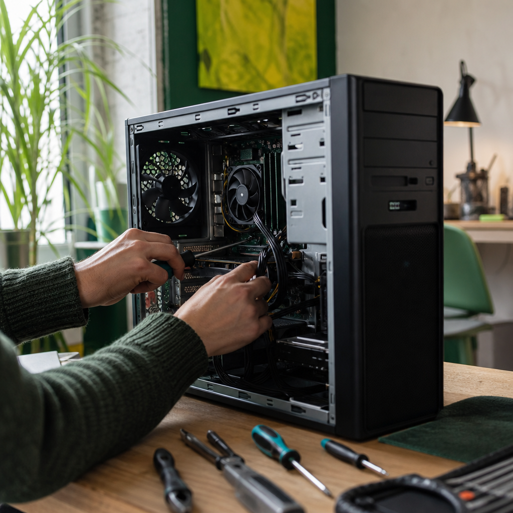

GBTech · Golden Bay Technology
IT Support for Tākaka, Golden Bay, Nelson & beyond
Broken laptop, printer chaos, or a workstation that will not boot — get a same-day remote fix with direct contact. Local tech support in the Bay since 2014 — remote beyond. No ticket queue, no call-centre script.
Routine support from $117/hr · call-outs when something is down
Golden Bay Technologies · Warwick Marshall · Tākaka · Remote NZ & beyond
What you get
Day-to-day fixes that stick
- End-user troubleshooting and helpdesk-style support for homes and small businesses
- Workstation, laptop, and device setup for new staff
- Same-day remote resolution for most routine faults
- Direct line to your technician — no ticket queue
- Coverage for Tākaka, Golden Bay, Nelson, Tasman & beyond
- Local experience since 2014 — not a fly-in franchise script
Related services
When it is more than a desktop fix
Get IT support today
We confirm scope and cost before work begins — hourly, project, or retainer.